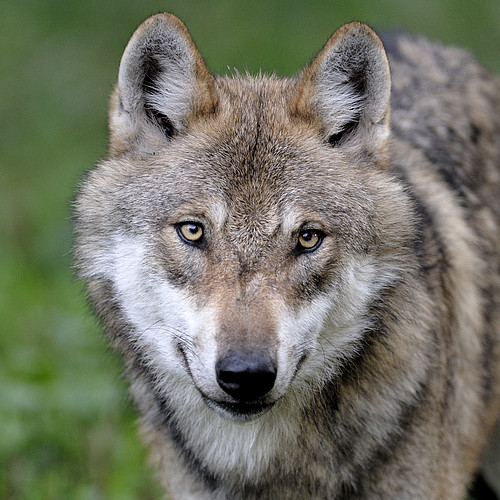

1.Wolf
Wolves can be found throughout most Europe and also in America. They mostly hunt
in packs and communicte to one another through howling, to let others know of their
location. They mostly hunt for large mammals like deer, elk, bison, and of course secondary
to their menu includes rabbits, beavers, mice.
